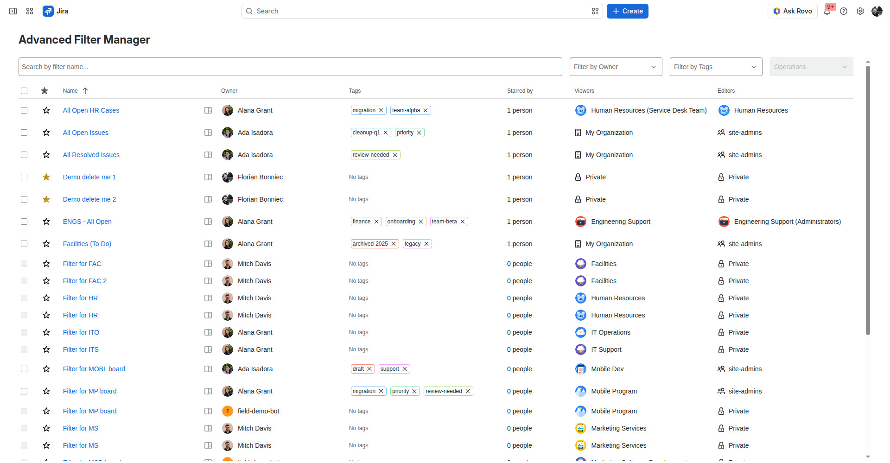
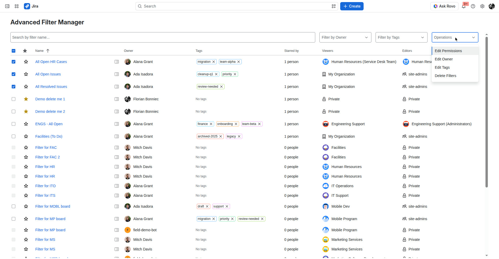
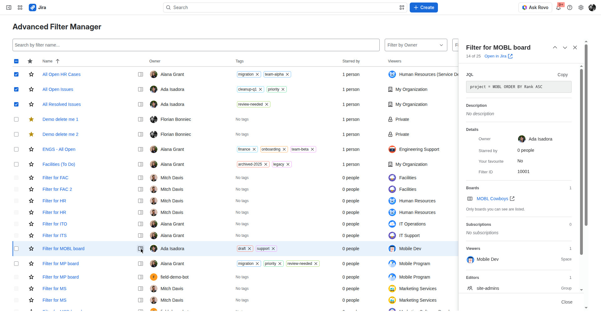
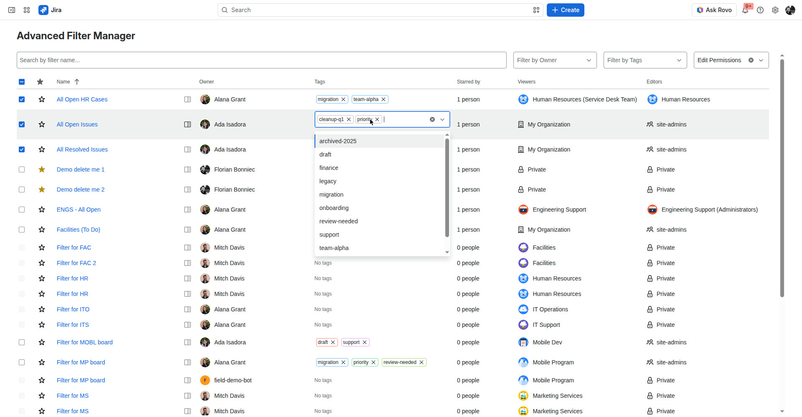
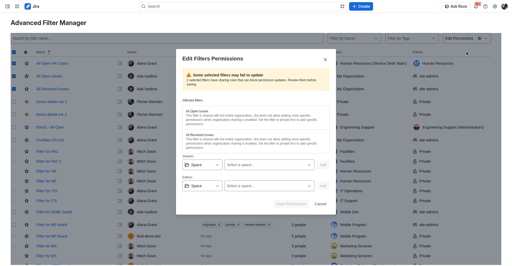
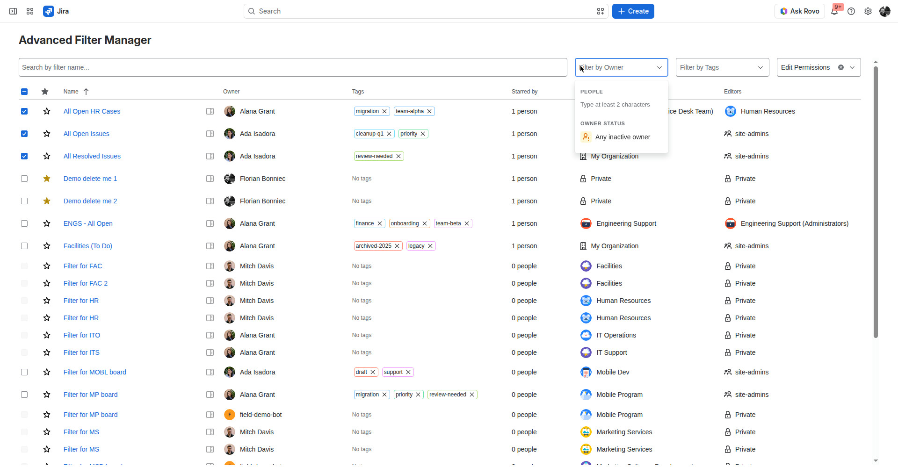

Advanced Filter Manager
Documentation for Jira Cloud
Overview
Advanced Filter Manager is a Jira Cloud app for managing saved filters in one place. Jira's built-in filter list works fine for a handful of filters. It gets painful when you have hundreds of them across teams and projects. This app gives you one list to organize, search, share, tag, and clean up your filters.

Quick Start
- Find your filters with search or sort.
- Open the details panel when you need context on a filter.
- Select the filters you can edit.
- Pick a bulk action.
Key Features & Usage
1. Bulk Operations
Select several filters at once, then update them all in one go. From the bulk actions menu you can change tags, sharing, and owners across dozens of filters at the same time.
Not sure about a filter before you change it? Open the Filter Details Panel to check its JQL, owner, permissions, and what uses it: the boards and subscriptions that depend on it. Your selection stays put while you look.
Delete filters in bulk. New in 3.0.0 Select the filters you no longer need, then delete them all at once from the bulk actions menu.
- You can only delete filters you own or administer in Jira.
- Each run is limited to 100 filters.
- Type DELETE exactly to confirm. The app shows the word in your selected language.
- You can stop a run in progress with Stop.
- When the run finishes, the summary shows what was deleted, what was skipped, and what could not be confirmed. If a result is unconfirmed, refresh the list before you try again.

2. Filter Details Panel
Filter names don't always say what a filter does. Open the panel to check the JQL, description, owner, permissions, tags, and what uses the filter, without opening it in Jira.

How to view filter details
- Find the filter in the table.
- Click the details icon beside its name. Its accessible label starts with View details for.
- The panel opens on the right with the filter's details.
- Use Previous filter or Next filter to move through the filters on the page.
- Close the panel with Close, the X icon, or the Esc key.
Click the filter name to open it in Jira, just as before.
All fields shown in the panel
| Field | What it shows |
|---|---|
| JQL | The full Jira Query Language expression, with a Copy button. |
| Description | The description, when one is set. |
| Owner | The owner, with an inactive or deleted account indicator when applicable. |
| Starred by | How many people have starred the filter. |
| Your favourite | Whether you have starred the filter. |
| Filter ID | The filter's Jira identifier. |
| Boards | Jira Software boards that use this filter, with links to open them. Only boards you can see are listed. |
| Subscriptions | Users and groups subscribed to this filter. |
| Viewers | The complete list of viewing permissions. |
| Editors | The complete list of editing permissions. |
| Tags | Tags associated with the filter. |
Check what uses a filter before you change it New in 3.0.0
Before you edit, transfer, or delete a filter, check the Boards and Subscriptions sections. They show what depends on the filter, so you don't break a board or stop someone's subscription updates. Boards load when the panel opens. Use Show all to expand the list and Load more to fetch the rest. Only boards you can see are listed. If your site doesn't use Jira Software, or the board scope hasn't been approved yet, the Boards section stays hidden instead of showing an error.
Move between filters without losing your selection
Previous and Next follow the filters on the current page, including your search and sort order. Opening, moving through, or closing the panel does not change your selection. You can review details while you prepare a bulk operation and keep your selection.
Read-only access
The panel is for review, not editing. To change JQL, descriptions, names, permissions, or tags, use the app's management tools or Jira. You can inspect any filter you can access, even if you can't edit it and its checkbox is disabled.
3. Filter Tagging
Stop relying on naming conventions to group your filters. Add tags to any filter you can edit, and build categories that make sense to you (for example "q3-okrs" or "frontend-bugs").
- Add, remove, or create tags inline on one filter, or through bulk operations.
- Reuse tags across your site. Suggestions are shared across your Jira instance, like Jira labels. Pick an existing tag instead of retyping it. Tags no longer in use disappear from the list on their own.
- Filter by one or more tags. A filter must match all the tags you select.

4. Sharing & Permissions Management
See who can access a filter. Make it private, or share it with specific Users, Groups, Spaces, Space Roles, or your whole Organization.
- Space roles: you can share with any space role you belong to, directly or through a group. The app only shows roles you belong to, so it won't offer an option Jira would reject when you save.
- Preflight checks: before a bulk update, the app flags filters that may fail. That includes filters shared with your whole organization and filters that point to spaces or roles that no longer exist. Review those filters and remove them from the batch if needed.
Sharing changes run as bulk operations. They follow Jira permissions: you can only update sharing on filters you can edit.

5. Change Ownership
When people move teams or leave the company, their filters often get stuck. Transfer ownership to another team member so the filters keep working. This runs as a bulk operation and follows Jira permissions: you can only transfer filters you can edit.
6. Find Orphaned & Inactive-Owner Filters
Filters owned by people who left quickly become invisible maintenance debt. The Owner status filter surfaces them for you:
- Any inactive owner: filters whose owner's account has been deactivated.
Combine this with a name or tag search, then transfer ownership in bulk so those filters keep working for the team.
When you find a filter owned by an inactive user, open the Filter Details Panel to check its JQL and sharing before you decide whether to transfer it.

7. Manage Favorites & Advanced Searching
Beyond bulk changes, the app covers everyday filter management:
- Favorites: mark a filter as a favorite right from the list.
- Advanced search: find filters by name, owner, or tags.
- Faster tag and owner searches: New in 3.0.0 On large lists, tag and owner searches check candidates without loading the full details of every match. Only the filters on the page you're viewing load in full.
Required Scopes & Data Usage
The app changes Jira filters, so Atlassian requires these permissions when you install it. The app only asks for what it needs.
| Scope | Why It Is Required |
|---|---|
read:jira-work |
Fetch your filters, read ownership and sharing, and show them in the list. |
write:jira-work |
Apply your changes: sharing, ownership, and favorites. |
read:jira-user |
Fill the dropdowns with user, group, and space role names when you share a filter or change an owner. |
read:board-scope.admin:jira-software |
List the Jira Software boards that use a filter in the Filter Details Panel. Your Jira admin needs to approve this scope when you update the app. New in 3.0.0 |
manage:jira-configuration |
Listen for Jira events when a filter is permanently deleted, so the app can clean up its tags in the background. |
storage:app |
Store your tags. Data stays on Atlassian's Forge infrastructure. |
Technical Limitations
The app works well on large instances. These are the limits worth knowing.
- Filter Permissions: You only see filters you can access in Jira. Filters you can view but not edit still show in the list, but you can't select them for bulk changes. You can still inspect them in the read-only Filter Details Panel.
- Boards in the Details Panel: The Boards section only lists boards you can see. If your site doesn't use Jira Software, or the board scope hasn't been approved yet, the section stays hidden instead of showing an error. If loading boards for one filter fails, the section shows "We couldn't load the boards" with a Try again button to reload just that filter's boards. New in 3.0.0
- Organization-shared Filters: Jira doesn't let you add specific sharing (users, groups, or project roles) to a filter shared with your whole organization. The app warns you before saving. To add specific permissions, make the filter private first, then set the sharing you need.
- Tags per Filter: Each filter can have up to 15 tags, with 50 characters per tag. Tags can use letters, numbers, hyphens, and underscores. If a bulk update would pass the 15-tag limit, the extra tags are skipped and a warning shows in the results.
- Searching by Tag: Tag searches return up to 500 filters. If more match, only the first 500 show. This keeps searches fast on large instances.
- Searching by Name or Owner: Name and owner searches return up to 1,000 results. If there are more matches, the app asks you to narrow your search. You can still browse the full list.
- Incomplete search results: New in 3.0.0 If a tag or owner search can't check every candidate, the app shows a warning ("Some results could not be checked") and the list may be incomplete. Refresh the page and try again.
- Unique Tags: An instance can hold about 2,000 unique tags. This is a soft limit, not a hard one. If you get close, reuse existing tags or clean up ones you no longer need.
Installation
Or install it from Jira:
- Log into your Jira instance over the web.
- Navigate to Apps > Find new apps.
- Search for "Advanced Filter Manager".
- Click Try it free. Accept the required scopes.
- Once installed, use the top navigation: Apps > Advanced Filter Manager.
Licensing
Free for Jira Cloud sites with up to 10 users. Any team can try it free for 30 days through the Atlassian Marketplace. After the trial, sites with more than 10 users need a paid license. Manage the subscription in Jira administration settings.
Need Help?
Something not working, or a feature you want? Contact support and we'll help.
Contact Support →